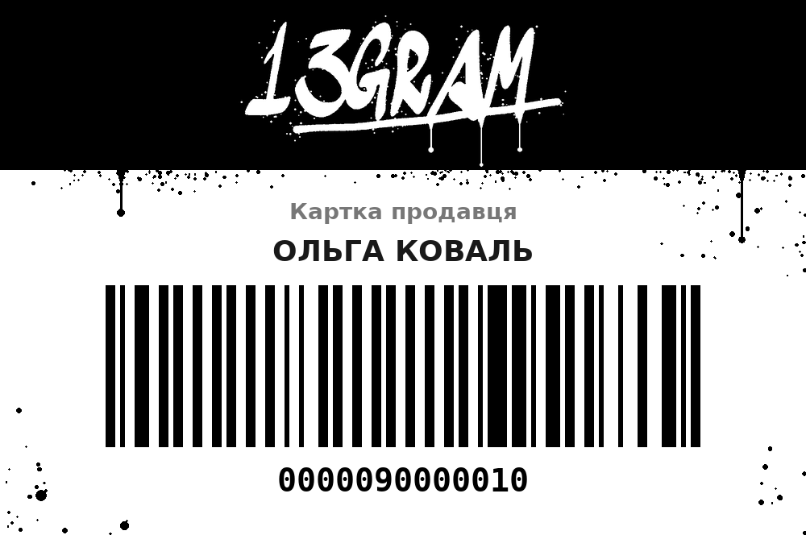
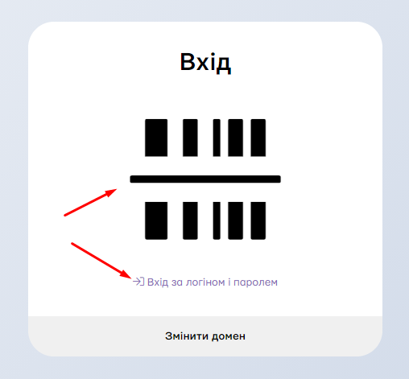
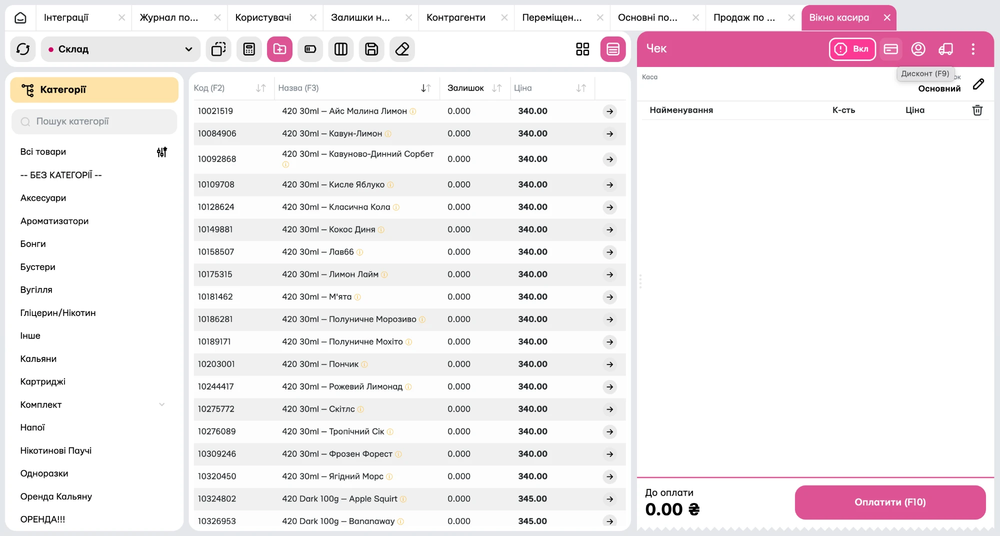
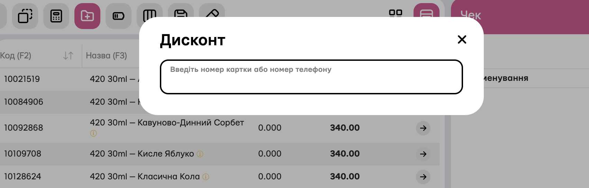

Твій день за 5 кроків
Кожен крок нижче розписано докладно.
- Відкрий зміну в боті«🟢 Відкрити зміну», потім твоя точка. До першого чека.
- Увійди в касу штрихкодом«🪪 Мій штрихкод» у боті, скан на екрані входу. Без логіна й пароля.
- Кожна покупка з картоюF9 «Дисконт» у касі, сканер зчитує карту з екрана телефона клієнта.
- Списуй фішки через бот«🎯 Списати фішки», клієнт підтверджує в Telegram.
- Закрий зміну в боті«🔴 Закрити зміну» в кінці дня.
Перший вхід у бот
Один раз. Адміністратор уже додав тебе в продавці за номером телефону.
- Відкрий у Telegram @easygramus_bot і натисни «Старт».
- Натисни «📱 Поділитися номером». Номер має бути той самий, що ти дав адміністратору.
- Бот відкриє меню продавця. Якщо бот вітає тебе як клієнта, напиши адміністратору: у списку продавців записано інший номер.
Відкрити зміну
Зміна починається в боті, до першого чека.
- Натисни «🟢 Відкрити зміну».
- Обери свою точку. У списку лише точки твого регіону.
- Готово: адміністратор регіону бачить, о котрій ти відкрився. У меню з'являться «🎯 Списати фішки» і «🔴 Закрити зміну».
Перейшов на іншу точку: відкрий зміну на новій, попередня закриється сама.
Не пробивай чеки без відкритої зміни: адміністратор бачить чеки без відкриття, а час відкриття потрапляє в статистику запізнень.
Вхід у «Вікно касира»: тільки штрихкодом
Після відкриття зміни входиш у касу DNTrade своїм особистим штрихкодом з бота.
- У боті натисни «🪪 Мій штрихкод». Бот надішле картинку зі штрихкодом.
- На екрані входу DNTrade піднеси сканер до екрана свого телефона: сканер зчитає штрихкод. Якщо сканер не читає, введи цифри під штрихкодом.
- Каса відкриється під твоїм ім'ям.
Скануєш свій штрихкод: кожен чек записується на тебе, і твої продажі, нові клієнти й фішки рахуються тобі.
Не натискай «Вхід за логіном і паролем» і не входь під чужим ім'ям: твої чеки підуть іншій людині, і в статистиці тебе не буде.


Кожна покупка
Перше питання кожному клієнту: «Ви вже з нами в Telegram? Покажіть карту, нарахуємо фішки».
Карта є: куди її вводити
- У «Вікні касира» в шапці чека натисни іконку картки «Дисконт (F9)» або клавішу F9.
- У вікні «Дисконт» піднеси сканер до екрана телефона клієнта: сканер зчитає штрихкод карти. Якщо сканер не читає, введи 6 цифр під штрихкодом.
- Додай товари і пробий чек як завжди.
Фішки нарахуються самі. Через 15–45 секунд клієнт отримає чек у Telegram: товари, сума і скільки фішок додалось.
Казбет · 26.11, 18:07
Вугілля Garden 1kg · 455 ₴
Тютюн Darkside 100 г × 2 · 520 ₴
Разом: 975 ₴ · 💳 картка
🎯 +48 фішок
Баланс: 148 фішок = 148 ₴ знижки
💡 Ще 25 ₴ у чеку, і було б 7 % фішками


Карти ще немає
- Попроси відкрити @easygramus_bot і натиснути «Старт».
- «📱 Поділитися номером» і «✅ Погоджуюсь». Карта прийде одразу.
- Введи нову карту через F9 «Дисконт», як звичайно.
Списання фішок
1 фішка = 1 ₴ знижки. До 50 % чека, кальяни фішками не оплачуються. Баланс клієнта ти не бачиш: бот сам рахує, скільки можна.
- «🎯 Списати фішки» і номер карти клієнта (або телефон).
- Сума чека.
- Сума кальянів у чеку або кнопка «Кальянів немає».
- Скільки фішок списати, або кнопка «Максимум».
- Клієнт отримує запит у Telegram і тисне «✅ Так, списати». Запит діє 5 хвилин.
- Коли бот напише «✅ Списано»: F6 і ручна знижка на цю суму на весь чек, потім F9 «Дисконт» і карта клієнта, потім пробий чек.
Знижка в чеку рівно на списану суму, і карта клієнта в чеку. Тоді все зійдеться автоматично.
Якщо за 30 хвилин чека зі знижкою немає, бот поверне фішки клієнту, а адміністратор отримає повідомлення.
Знижка в чеку інша, ніж списали: ти й адміністратор отримаєте повідомлення про розбіжність.
У чеку зі списанням фішки не нараховуються. Клієнт відмовився або не встиг: просто створи новий запит.
Введіть номер карти клієнта (цифри під штрихкодом) або телефон:
Знижка 120 ₴ · ТРЦ Плазма
Зараз на балансі: 148
Після списання: 28
Запит дійсний 5 хв
Тепер на касі:
1. F6 → ручна знижка 120 ₴ на весь чек
2. Дисконтна карта → скан карти клієнта
3. Пробити чек
Повернення
Бот сам розбереться з фішками.
Оформлюй повернення в DNTrade по чеку клієнта, як завжди. Бот сам зніме фішки, нараховані за повернений товар, і надішле клієнту повідомлення.
Якщо в цьому чеку списували фішки, списані фішки не повертаються.
Чек видалили в DNTrade: бот теж це побачить і зніме нараховані за нього фішки.
Казбет · 26.11, 18:07
Тютюн Darkside 100 г · 260 ₴
Разом: 260 ₴ · 💵 готівка
🎯 −13 фішок
Баланс: 135 фішок = 135 ₴ знижки
«📊 Моя зміна»: твоя аналітика
Натискай будь-коли протягом дня.
- Сума і кількість чеків, готівка і картка окремо, повернення.
- Середній чек і останній чек.
- Нових клієнтів у боті: скількох ти привів сьогодні і за весь час.
- Нараховано фішок клієнтам за твої чеки і списано фішок через тебе.
- Ручні знижки: чеки зі знижкою без списання фішок у боті. Адміністратор їх бачить.
Чеки підтягуються щохвилини. Якщо чеків немає, а ти продавав, напиши адміністратору: можливо, в DNTrade тебе записано під іншим ім'ям.
🟢 ТРЦ Плазма · з 10:02
1 405 ₴ · 2 чеки
💵 Готівка: 430 ₴ · 💳 Картка: 975 ₴
Середній чек: 702 ₴
Останній: 15:20 · 430 ₴
👥 Нових клієнтів у боті: сьогодні 0 · всього 0
➕ Нараховано фішок клієнтам: 0
🎯 Списано фішок: немає
✂️ Ручні знижки: немає
Закрити зміну
В кінці дня, після останнього чека.
- Натисни «🔴 Закрити зміну».
- Підтвердь «Так, закрити».
- Бот покаже підсумок зміни, адміністратор регіону отримає його теж.
Купити собі
«👤 Я як клієнт» відкриває твою карту клієнта: купуй і отримуй фішки, як усі. Повернутися: «↩️ Меню продавця». Зміна при цьому не закривається.
1 405 ₴ · 2 чеки
💵 Готівка: 430 ₴ · 💳 Картка: 975 ₴
Куди далі?
Шлях клієнта
Так бачить програму покупець. Покажи йому перші три кроки, решта відбувається сама.
Карта лояльності EASY SWAP прямо тут, у Telegram.
🎯 Фішки з кожної покупки
💸 1 фішка = 1 ₴ знижки
🧾 Чеки та історія в одному місці
Натисніть кнопку нижче, щоб отримати карту 👇
Натискаючи «Погоджуюсь», ви підтверджуєте, що вам є 18 років, і погоджуєтесь на обробку даних.

Покажіть штрихкод на касі або назвіть номер.
Покажіть штрихкод на касі або назвіть номер.
Казбет · 26.11, 18:07
Вугілля Garden 1kg · 455 ₴
Тютюн Darkside 100 г × 2 · 520 ₴
Разом: 975 ₴ · 💳 картка
🎯 +48 фішок
Баланс: 148 фішок = 148 ₴ знижки
💡 Ще 25 ₴ у чеку, і було б 7 % фішками
= 148 ₴ знижки
Оплатити фішками можна до 50 % чека.
👉 На касі скажіть продавцю, скільки фішок списати.
Знижка 120 ₴ · ТРЦ Плазма
Зараз на балансі: 148
Після списання: 28
Запит дійсний 5 хв
📦 26.11 · 18:07 · Казбет
975 ₴ · 💳 картка · 🎯 +48
📦 22.11 · 12:40 · Казбет
455 ₴ · 💵 готівка · 🎯 +22
Натисніть на чек, щоб відкрити його.
Що сказати клієнту
Три фрази, які працюють.
«У нас є карта лояльності в Telegram: з кожної покупки фішки, 1 фішка = 1 гривня знижки. Реєстрація 20 секунд».
«Чек кожної покупки приходить вам у Telegram. Якщо трапиться брак, повернемо без проблем. Без чека повернути не вийде».
«Фішками можна оплатити до половини наступної покупки».
Часті ситуації
Коротко, що робити.
- Сканер не читає штрихкод клієнта
- Введи 6 цифр під штрихкодом у вікні «Дисконт» (F9).
- Забув ввести карту, чек уже пробито
- Фішки за цей чек не нарахуються. Скажи адміністратору: він нарахує їх вручну.
- Клієнт каже, що чек не прийшов
- Чек приходить протягом хвилини. Перевір, що в чеку була його карта. Якщо клієнт заблокував бота, повідомлення не дійде.
- У клієнта немає Telegram
- Пробий покупку без карти. Запропонуй зареєструватися наступного разу.
- Бот пише «Сервіс тимчасово недоступний»
- DNTrade не відповідає. Почекай кілька хвилин. Фішки за всі чеки нарахуються самі, щойно зв'язок повернеться.
- Бот пише «Кнопка застаріла»
- Натисни /start або кнопку меню і повтори дію.
- Клієнт хоче списати більше, ніж дозволяє бот
- Максимум: половина чека без кальянів і не більше, ніж є на балансі. Більше списати не можна.
- Переходжу на іншу точку посеред дня
- «🟢 Відкрити зміну» на новій точці. Попередня зміна закриється сама.
Правила коротко
Усе, що варто пам'ятати.